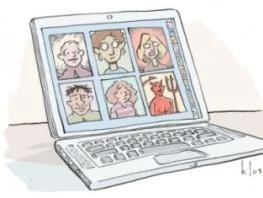
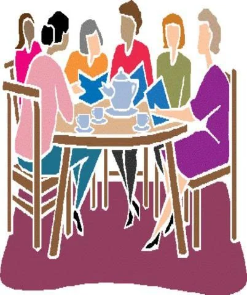
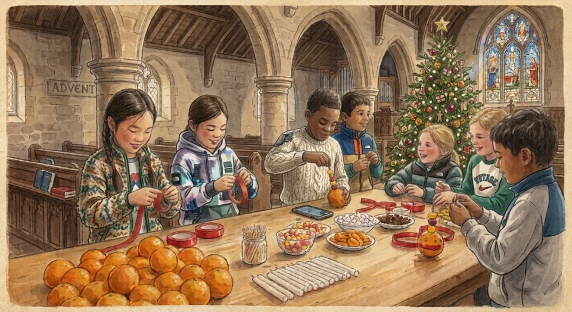
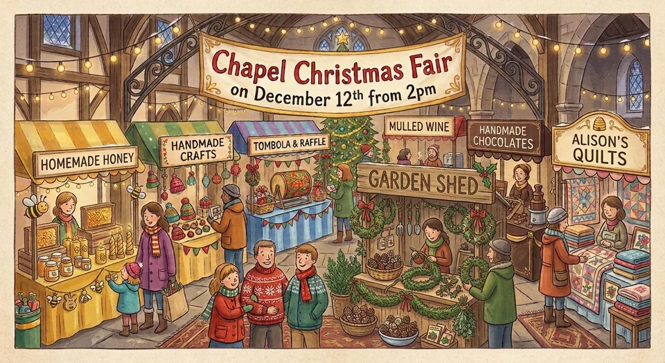

Pews News
The First Sunday of Advent
This Sunday
10am
Morning Worship for Advent
in Church
Today’s readings
Acts 12.1-14 and Mark 13.24-37
The Collect for today
Almighty God, as your kingdom dawns, turn us from the darkness of sin to the light of holiness, that we may be ready to meet you in our Lord and Saviour Jesus Christ. Amen.

Join the service on Zoom
If you are zooming, please try and join at least five minutes before the service is due to start; the codes are set out below
Meeting ID 812 6812 6840Passcode 221883
Join by telephone
If you would prefer to dial in on your telephone, call any of the numbers below to listen to the service: there will be a recorded message and you will be asked to enter the Meeting ID and then the Passcode.
The Weeks Ahead….
Open Doors
Sunday 29th November at 10am in church
PLEASE NOTE: on Sunday 29th November at 10am in church, we will have John Barringer coming to speak on behalf of Open Doors a charity involved in helping persecuted Christians and we will be collecting donations for the charity’s work.
Every day, millions of Christians risk their lives to follow Jesus. In more than 70 countries, Open Doors supports them by supplying Bibles, providing emergency relief and helping persecuted believers stand strong for the long-term. In the UK and Ireland, Open Doors helps the church to pray, give and speak out for those who share our faith but not our freedom.
Monday evening Bible study
Monday 30th November at 7.45pm until 9pm
The Monday evening Bible study group meets at Westhumble Chapel for the third session of the Advent Study.
Please contact Amanda on aewadsworth@hotmail.com if you would like more information about joining this group.

Thursday morning Bible Study
Thursday 3rd December at 11am for 11.30am start until 12.30pm
The Thursday morning Bible Study group meets at Westhumble Chapel. If you would like to join this group, please email admin@micklehamchurch.org.uk or call Alison Wood on 01372 376443 or 07905 985928.
Compline
Tuesday 1st December at 7pm
Compline in church. All are welcome to come along for a short service and period of reflection, prayer and fellowship.
Coffee and cake
Saturday 5th December from 10am till 12 noon
Coffee and cake at the Chapel in Westhumble. Only £2 and free drinks for children. Do come along and bring a friend or neighbour. Offers of homemade cakes or help on the morning appreciated. Contact Jonathan Blake: 07787 126966.
At a glance
SOME DATES FOR YOUR DIARIES……
Dates for your diary.
Open a notice for full details.

Sunday 6th December at 10am in church for the workshop followed by the service at 11am.
Christingle Craft Workshop and Family Service
Full details
Please note that the Christingle Craft Workshop and Family Service will be on Sunday 6th December at 10am in church for the workshop followed by the service at 11am.
All families are welcome to come and make their Christingles and enjoy Christmas crafts and worship together.
The workshop is free but please book with Francesca on franikins@hotmail.co.uk to help us plan for numbers and supplies.

December 12th from 2pm
Chapel Christmas Fair
Full details
Homemade honey; handmade crafts; tombola & raffle; mulled wine; handmade chocolates; Alison’s quilts; garden shed.
Caring for our neighbours
News from the Food Bank
Thank you so much for your continued kindness and support. Here are some suggested items that are needed this week:
- Tinned Custard
- Tinned Meat
- Washing-Up Liquid
- Instant Coffee
- Chocolate bars and Biscuits
All Christmas-spirited donations (cake, pudding, chocolate, biscuits, mince pies with best before date after 25/12) are all most welcome as well 🙏🎄
You can drop donations off in Church on Sunday morning, at the monthly Chapel Coffee morning (10am to 12noon), at The Stepping Stones pub, or at any time at any of the usual locations in Mickleham and Westhumble, details in the Parish Magazine.
Christmas services and related events
There is a flyer with a full list of the dates of all the Christmas services and related events for this year on the Welcome table at the back of the church. Do take one as you come into or leave church.
Thank you
Thank you to everyone who donated a shoe box. They will be much appreciated by those who receive them. Over 115 were sent from Mickleham and Westhumble.
SAFEGUARDING AUDIT SURVEY NOW OPEN
As part of the Church of England's independent safeguarding audit programme, the Diocese of Guildford and Guildford Cathedral are being audited by safeguarding specialists, INEQE. You can find out more about the audit on the diocesan website.
As part of this process, INEQE wants to hear directly from people across our parish communities about how we create environments where people feel safe, valued and respected.
The audit will help identify strengths in our safeguarding practice, as well as opportunities to learn, improve and build on what we do well.
There are separate survey links for different groups, including clergy and church staff, church members, those who attend parish activities, children and young people, and victims and survivors. The surveys are anonymous and confidential, and we encourage everyone to participate openly and honestly.
Survey links can be found here and will remain open until 1 January 2027.
If you have any questions about the audit, please contact the diocesan safeguarding team at ineqe@cofeguildford.org.uk
You can find out more about the audit on the diocesan website: https://www.cofeguildford.org.uk/ineqe-safeguarding-audit
Survey links can be found here: https://ineqe.com/churchofengland/guildford/